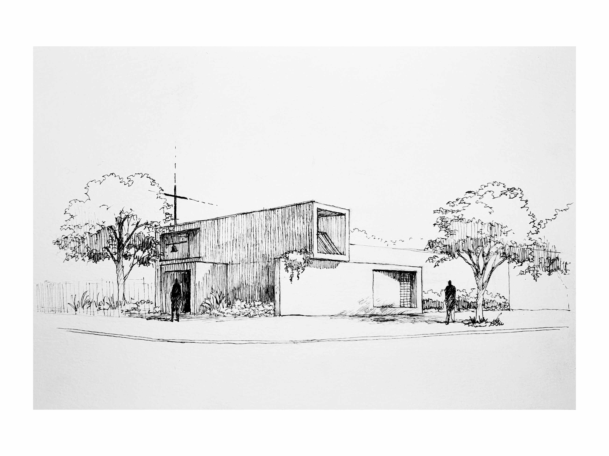

Parroquia San Francisco de Paula - Diócesis Lomas de Zamora
2025. Lomas de Zamora. Buenos Aires.
-
Info
- La propuesta define dos intervenciones, una en el interior y la otra trabajando en las fachadas exteriores.
- Dentro del templo se considera ganar mayor espacio en el altar. Generando así una superficie cómoda para el desarrollo del rito de la misa como otras celebraciones. Se busca mejorar la iluminación desde ventanas laterales y texturas claras que ayuden a su propagación por reflejo. En el lateral se plantea un espacio dedicado al sacramento de reconciliación dándole jerarquía por medio de una lucarna que permite el ingreso de luz. Se trabaja en conjunto con la capilla lateral destinada a la devoción de los Santos, vinculando las funciones de circulación, oración y contemplación. Se busca la presencia de la luz natural y su desarrollo en texturas claras y simples.
- En el exterior se decide incorporar un campanario y un crucifijo como elementos que ayuden a identificar a la parroquia como un hito en la comunidad. Se busca a través de la morfología darle presencia, mejorando su relación con el sitio. Creemos que la parroquia es un lugar propio de la comunidad, un espacio importante para su desarrollo personal y social por ende apostamos por una presencia simple y fuerte.
-
Ubicación: Bariloche 2603, Lomas de Zamora -Provincia de Buenos Aires - Argentina
-
Superficie: Cubierta: 110 m2
-
Estado: Anteproyecto
-
Año: 2025
